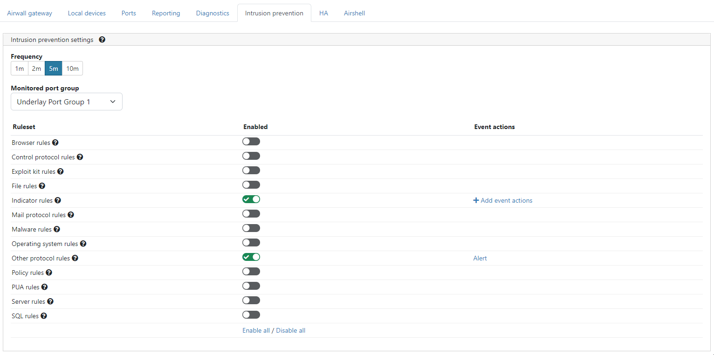

Setting up intrusion prevention
Note: Enabling intrusion prevention may reduce
performance.
- In the Conductor, go to Airwalls and select an Airwall Gateway.
-
Click Intrusion prevention.

-
Select Frequency between 1 minute and 10 minutes.
Frequency is the rate at which batches of intrusion events are sent to the
Conductor.
Note: If multiple intrusions of the same type occur in the time frame, they are sent as a single event.
- Choose a Monitored port group.
-
Enable or disable the required Ruleset(s):
- Browser rules: This category contains detection for vulnerabilities present in products that have the “Gecko” engine (Firefox browser), Trident or Tasman engines (Internet Explorer browser), and the Webkit browser engine (Apple’s Safari, Nokia, KDE, Webkit itself, etc.), along with rules for other engines and browser plugins.
- Control protocol rules: This category is for rules that may indicate the presence of or vulnerabilities in SCADA, SNMP, and RPC protocol traffic.
- Exploit kit rules: This category is specifically tailored to detect exploit kit activity (related “post-compromise” rules and rules relating to files that are dropped as result of visiting an exploit kit found in the indicator rules and files rules categories).
- File rules: This category contains rules for vulnerabilities that are found inside of image files, Java files (.jar), multimedia files (mp3, movies, wmv), files related to the Microsoft Office suite (Excel, PowerPoint, Word, Visio, Access, Outlook, etc.).
- Indicator rules: This category contains rules that look for traffic to be used for the detection of a positively compromised system or obfuscated content, and for markers of shellcode or indications of scanning in traffic.
- Mail protocol rules: This category is for rules that may indicated the presence of or vulnerabilities in IMAP, NNTP, and POP traffic.
- Malware rules: This category contains rules for the detection of traffic destined to known listening backdoor command channels, known malicious command and control activity for identified botnet traffic, tools that can be considered malicious in nature, and other potential malware traffic.
- Operating system rules: This category contains rules that look for vulnerabilities in Linux, Solaris, Windows, Mobile, and other related rules.
- Other protocol rules: This category is for rules that may indicated the presence of or vulnerabilities in ICMP, Telnet, TFTP, VOIP, and other protocol traffic not covered in the mail and control protocol categories.
- Policy rules: This category contains rules that detect potential violations of policy for multimedia and social media, and rules that may indicate the presence of spam along with other rules that may violate the end-users corporate policy.
- PUA rules: This category deals with Potentially Unwanted Applications (PUA) that deal with adware, spyware, p2p, toolbars installed on the client system, along with other PUAs.
- Server rules: This category deals with vulnerabilities in or attacks against Apache Web Server, Microsoft IIS Web Server, Microsoft SQL Server, Oracle’s MySQL Server, Oracle’s DB Server, Samba’s Servers, mail servers (Exchange, Courier), and other related rules.
- SQL rules: This category contains rules that detect SQL injection or the presence of other vulnerabilities against SQL like servers.
-
When you enable a ruleset, select an Action type:
- Alert
- Enable / Disable
- HTTP call
- Reboot
- Tag add / remove
- Tag enable / disable
Note: For more on Action type, see Event Actions - Fill in the required information and click Create.
- Add another action or click Finish.